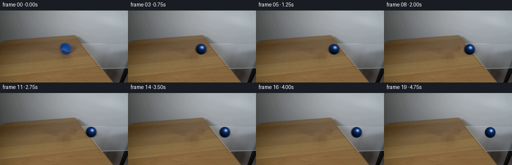
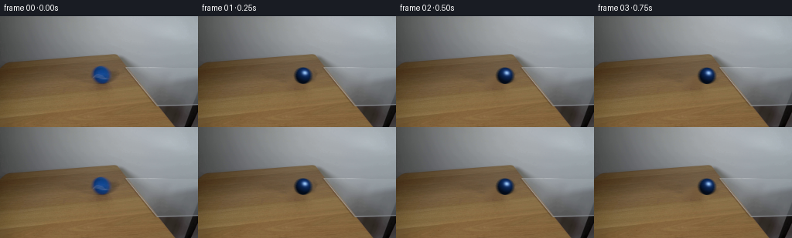
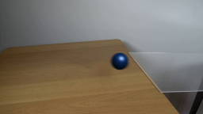
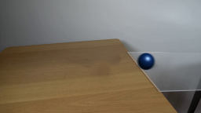
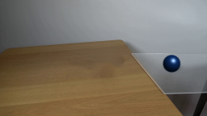

CODING AGENTS AS PIXEL WORLD MODELS
traex/DeepSeek-V4.1-Flash · 0025
点击播放 · 原生 RGB 像素
此结果可播放，但该运行尚未通过最终提交审核。页面展示不代表评测通过。
逐轮保存的候选
回放视频、检查图与代码变化。
每份候选均可单独播放。实际图片检查记录在下方工具轨迹中。
候选 01播放与检查图
点击播放 · 原生 RGB 像素


展开代码变化
--- 上一保存版本 +++ 本次保存版本 @@ -0,0 +1,199 @@ +from pathlib import Path + +import cv2 +import numpy as np + +import artifact_io + + +WIDTH = 256 +HEIGHT = 144 +N_FRAMES = 20 +FPS = 4 +SS = 6 + + +def smoothstep(edge0, edge1, value): + x = np.clip((value - edge0) / (edge1 - edge0), 0.0, 1.0) + return x * x * (3.0 - 2.0 * x) + + +def make_clean_plate(frame): + mask = np.zeros((HEIGHT, WIDTH), np.uint8) + cv2.ellipse(mask, (131, 77), (18, 15), 0, 0, 360, 255, -1) + cv2.ellipse(mask, (141, 84), (14, 8), 0, 0, 360, 255, -1) + mask = cv2.dilate(mask, cv2.getStructuringElement(cv2.MORPH_ELLIPSE, (3, 3))) + + bgr = cv2.cvtColor(frame, cv2.COLOR_RGB2BGR) + clean_bgr = cv2.inpaint(bgr, mask, 4, cv2.INPAINT_TELEA) + clean = cv2.cvtColor(clean_bgr, cv2.COLOR_BGR2RGB).astype(np.float32) + + # Reintroduce fine wood grain that a low-frequency inpaint cannot recover. + patch = clean[57:96, 70:109] + grain = patch - cv2.GaussianBlur(patch, (0, 0), 1.7) + tile = np.tile(np.concatenate((grain, grain[:, ::-1]), axis=1), (3, 3, 1)) + texture = np.zeros_like(clean) + texture[54:102, 104:152] = tile[:48, :48] + alpha = cv2.GaussianBlur(mask.astype(np.float32) / 255.0, (0, 0), 1.1) + clean += 0.55 * texture * alpha[:, :, None] + return np.clip(clean, 0, 255).astype(np.uint8) + + +def glass_left_edge(y): + return 163.0 + 0.8077 * (y - 65.0) + + +def ball_position(frame_index): + if frame_index <= 8: + x = 131.0 + 5.0 * frame_index + else: + x = 171.0 + 3.75 * (frame_index - 8) + y = 77.0 + 0.10 * frame_index + return x, y + + +def draw_shadow(canvas, cx, cy, glass_amount): + radius_x = 12.8 + radius_y = 5.1 + pad = 8.0 + x0 = max(0, int((cx - radius_x - pad) * SS)) + x1 = min(canvas.shape[1], int((cx + radius_x + pad) * SS) + 2) + y0 = max(0, int((cy - radius_y - pad) * SS)) + y1 = min(canvas.shape[0], int((cy + radius_y + pad) * SS) + 2) + yy, xx = np.mgrid[y0:y1, x0:x1].astype(np.float32) + dx = (xx / SS - (cx + 2.1)) / radius_x + dy = (yy / SS - (cy + 5.2)) / radius_y + distance = np.sqrt(dx * dx + dy * dy) + alpha = np.exp(-1.7 * distance ** 4) + alpha *= 0.24 - 0.06 * glass_amount + roi = canvas[y0:y1, x0:x1].astype(np.float32) + roi *= (1.0 - alpha[:, :, None]) + canvas[y0:y1, x0:x1] = np.clip(roi, 0, 255).astype(np.uint8) + + +def draw_glass_reflection(canvas, cx, cy, glass_amount): + if glass_amount <= 0.01: + return + radius_x, radius_y = 9.0, 3.8 + x0 = max(0, int((cx - radius_x - 5) * SS)) + x1 = min(canvas.shape[1], int((cx + radius_x + 5) * SS) + 2) + y0 = max(0, int((cy - 2) * SS)) + y1 = min(canvas.shape[0], int((cy + radius_y + 9) * SS) + 2) + yy, xx = np.mgrid[y0:y1, x0:x1].astype(np.float32) + dx = (xx / SS - (cx + 2.4)) / radius_x + dy = (yy / SS - (cy + 8.2)) / radius_y + alpha = np.exp(-1.8 * (dx * dx + dy * dy) ** 1.5) + alpha *= 0.11 * glass_amount + tint = np.array([24.0, 67.0, 132.0], np.float32) + roi = canvas[y0:y1, x0:x1].astype(np.float32) + roi = roi * (1.0 - alpha[:, :, None]) + tint * alpha[:, :, None] + canvas[y0:y1, x0:x1] = np.clip(roi, 0, 255).astype(np.uint8) + + +def draw_ball(canvas, cx, cy, angle): + radius = 10.7 + pad = 3.0 + x0 = max(0, int((cx - radius - pad) * SS)) + x1 = min(canvas.shape[1], int((cx + radius + pad) * SS) + 2) + y0 = max(0, int((cy - radius - pad) * SS)) + y1 = min(canvas.shape[0], int((cy + radius + pad) * SS) + 2) + + yy, xx = np.mgrid[y0:y1, x0:x1].astype(np.float32) + nx = (xx / SS - cx) / radius + ny = (yy / SS - cy) / radius + rr2 = nx * nx + ny * ny + nz = np.sqrt(np.clip(1.0 - rr2, 0.0, 1.0)) + + angle_wave = 0.012 * np.sin(23.0 * np.arctan2(ny, nx) + 7.0 * angle) + alpha = smoothstep(1.018, 0.982, np.sqrt(rr2) + angle_wave) + if not np.any(alpha > 0): + return + + cos_theta = np.cos(angle) + sin_theta = np.sin(angle) + tx = nx * cos_theta + ny * sin_theta + ty = -nx * sin_theta + ny * cos_theta + + light = np.array([0.35, -0.65, 0.675], np.float32) + light /= np.linalg.norm(light) + view = np.array([0.0, 0.0, 1.0], np.float32) + half_vector = light + view + half_vector /= np.linalg.norm(half_vector) + + lambert = np.clip(nx * light[0] + ny * light[1] + nz * light[2], 0.0, 1.0) + diffuse = 0.23 + 0.77 * lambert + + tex = ( + 1.0 + + 0.035 * np.sin(19.0 * tx + 8.0 * nz + 2.7 * ty) + + 0.025 * np.cos(17.0 * ty - 7.0 * nz + 0.9 * tx) + + 0.018 * np.sin(31.0 * (tx + ty) + 11.0 * nz) + ) + rim = 0.72 + 0.28 * np.clip(nz, 0.0, 1.0) + shade = diffuse * tex * rim + base = np.array([13.0, 49.0, 111.0], np.float32) + rgb = base[None, None, :] * shade[:, :, None] + + # Soft daylight reflection plus the camera-facing highlight visible in frame zero. + ndoth = np.clip(nx * half_vector[0] + ny * half_vector[1] + nz * half_vector[2], 0.0, 1.0) + specular = 0.84 * ndoth ** 28 + specular += 0.20 * np.exp(-((nx - 0.26) ** 2 / 0.040 + (ny + 0.29) ** 2 / 0.060)) + rgb += np.array([178.0, 194.0, 204.0], np.float32)[None, None, :] * specular[:, :, None] + + # A cool bounce from the tabletop keeps the lower edge from going black. + bounce = np.clip((ny + 0.15) * (1.0 - nz) * 0.12, 0.0, 0.10) + rgb += np.array([24.0, 31.0, 32.0], np.float32)[None, None, :] * bounce[:, :, None] + + roi = canvas[y0:y1, x0:x1].astype(np.float32) + a = alpha[:, :, None] + roi = rgb * a + roi * (1.0 - a) + canvas[y0:y1, x0:x1] = np.clip(roi, 0, 255).astype(np.uint8) + + +def render_frame(base, frame_index): + if frame_index == 0: + return base.copy() + + x, y = ball_position(frame_index) + prev_x, _ = ball_position(frame_index - 1) + next_x, _ = ball_position(min(frame_index + 1, N_FRAMES - 1)) + velocity = 0.5 * ((next_x - x) + (x - prev_x)) + exposure = 0.72 + + high = cv2.resize(base, (WIDTH * SS, HEIGHT * SS), interpolation=cv2.INTER_NEAREST) + samples = 5 + offsets = np.linspace(-0.5 * exposure, 0.5 * exposure, samples) + accum = np.zeros_like(high, dtype=np.float32) + + for offset in offsets: + sx = x + velocity * offset + sy = y + 0.10 * velocity * offset + glass_amount = smoothstep(-4.0, 5.0, sx - glass_left_edge(sy)) + canvas = high.copy() + draw_glass_reflection(canvas, sx, sy, glass_amount) + draw_shadow(canvas, sx, sy, glass_amount) + distance = sx - 131.0 + draw_ball(canvas, sx, sy, distance / 10.7) + accum += canvas.astype(np.float32) + + accum /= samples + out = cv2.resize(accum, (WIDTH, HEIGHT), interpolation=cv2.INTER_AREA) + return np.clip(np.rint(out), 0, 255).astype(np.uint8) + + +def main(): + case_dir = Path(__file__).resolve().parent + first = cv2.cvtColor(cv2.imread(str(case_dir / "first_frame.png")), cv2.COLOR_BGR2RGB) + assert first.shape == (HEIGHT, WIDTH, 3) + + clean = make_clean_plate(first) + frames = np.empty((N_FRAMES, HEIGHT, WIDTH, 3), dtype=np.uint8) + frames[0] = first + for index in range(1, N_FRAMES): + frames[index] = render_frame(clean, index) + + artifact_io.save(frames, case_dir) + + +if __name__ == "__main__": + main()
可观测工具轨迹
实际执行的命令与返回图片。
命令 1exit 0
/bin/bash -c "pwd && rg --files -g 'prompt.txt' -g 'GENERATION_RULES.md' -g '"'!*.mp4'"' -g '"'!*.webm'"' -g '"'!*.gif'"' | sort"
命令 2exit 0
/bin/bash -c 'ls -la'
命令 3exit 0
/bin/bash -c "find . -maxdepth 3 -type f \\( -name '*.py' -o -name '*.sh' -o -name '*.json' -o -name '*.md' \\) -print | sort | head -200"
命令 4exit 0
/bin/bash -c 'cat GENERATION_RULES.md'
命令 5exit 0
/bin/bash -c 'cat prompt.txt'
命令 6exit 0
/bin/bash -c "sed -n '1,240p' artifact_io.py"
命令 7exit 0
/bin/bash -c "sed -n '1,220p' player_template.html"
命令 8exit 0
/bin/bash -c "python - <<'PY'
from PIL import Image
im=Image.open('first_frame.png')
print(im.mode, im.size)
im.resize((1024,576)).save('.tmp/first_x4.png')
PY"命令 9exit 0
/bin/bash -c "python - <<'PY' import importlib.util for m in ['cv2','scipy','skimage','numpy','PIL','imageio','matplotlib']: print(m, bool(importlib.util.find_spec(m))) PY"
命令 10exit 0
/bin/bash -c 'ffmpeg -version | head -3; ffprobe -version | head -1'
命令 11exit 0
/bin/bash -c "find .tmp -maxdepth 2 -type f -printf '%p %s\\n' | sort"
命令 12exit 0
/bin/bash -c "python - <<'PY'
from PIL import Image
im=Image.open('first_frame.png')
for box,name in [((100,40,200,120),'ball'),((145,45,256,135),'glass'),((0,70,256,144),'lower'),((0,0,256,80),'upper')]:
im.crop(box).resize(((box[2]-box[0])*6,(box[3]-box[1])*6)).save(f'.tmp/{name}_x6.png')
PY"命令 13exit 0
/bin/bash -c "python - <<'PY'
import cv2, numpy as np
im=cv2.imread('first_frame.png')
hsv=cv2.cvtColor(im, cv2.COLOR_BGR2HSV)
# blue pixels: high saturation, blue hue
mask=((hsv[:,:,0]>95)&(hsv[:,:,0]<135)&(hsv[:,:,1]>70)&(hsv[:,:,2]>50)).astype(np.uint8)*255
n, labels, stats, cents=cv2.connectedComponentsWithStats(mask)
for i in range(1,n):
if stats[i,4]>5: print(i, stats[i].tolist(), cents[i].tolist())
cv2.imwrite('.tmp/bluemask.png',mask)
PY"命令 14exit 0
/bin/bash -c "python - <<'PY'
import cv2, numpy as np
im=cv2.imread('first_frame.png')
mask=np.zeros(im.shape[:2],np.uint8)
cv2.ellipse(mask,(131,77),(20,18),0,0,360,255,-1)
for rad in [3,7]:
out=cv2.inpaint(im,mask,rad,cv2.INPAINT_TELEA)
cv2.imwrite(f'.tmp/inpaint_telea{rad}.png',out)
out=cv2.inpaint(im,mask,5,cv2.INPAINT_NS)
cv2.imwrite('.tmp/inpaint_ns.png',out)
# patch from left x=77..117 to x=111..151 rows same, alpha ellipse feather
src=im[57:97,77:117].copy()
dst=im.copy()
alpha=np.zeros((40,40),np.float32)
cv2.ellipse(alpha,(20,20),(22,20),0,0,360,1,-1)
alpha=cv2.GaussianBlur(alpha,(11,11),3)
roi=dst[57:97,111:151].astype(np.float32)
roi=src.astype(np.float32)*alpha[:,:,None]+roi*(1-alpha[:,:,None])
dst[57:97,111:151]=roi.astype(np.uint8)
cv2.imwrite('.tmp/inpaint_patch.png',dst)
PY"命令 15exit 0
/bin/bash -c "python - <<'PY'
from PIL import Image
for n in ['inpaint_telea3','inpaint_telea7','inpaint_ns','inpaint_patch']:
im=Image.open(f'.tmp/{n}.png')
im.crop((95,50,170,110)).resize((600,480)).save(f'.tmp/{n}_zoom.png')
PY"命令 16exit 0
/bin/bash -c "python - <<'PY'
import numpy as np, cv2
im=cv2.imread('first_frame.png')[:,:,::-1]
# sample background rows left/right for ball region
for y in range(52,100,4):
print(y, [tuple(im[y,x]) for x in [105,110,115,145,150,155]])
PY"命令 17exit 0
/bin/bash -c "python - <<'PY'
from PIL import Image
for n in ['inpaint_ns','inpaint_patch']:
im=Image.open(f'.tmp/{n}_zoom.png')
print(n)
PY"命令 18exit 1
/bin/bash -c "python - <<'PY'
import cv2,numpy as np
im=cv2.imread('first_frame.png').astype(np.float32)
out=im.copy(); x0,x1,y0,y1=109,157,55,102
for y in range(y0,y1):
a=im[y,x0-1]; b=im[y,x1]
t=np.linspace(0,1,x1-x0+1)[1:-1,None]
# slight smooth cubic
t=t*t*(3-2*t)
out[y,x0:x1]=a*(1-t)+b*t
# texture transfer using source strip x=84:108; highpass
src=cv2.GaussianBlur(im[y0:y1,82:106],(0,0),2)
hi=im[y0:y1,82:106]-src
# tile/mirror highpass to fill region, fade at boundaries
h,w=x1-x0,y1-y0
tile=np.tile(np.concatenate([hi,hi[:,::-1]],axis=1),(1,4,1))[:h,:w]
# actually dims h,w; concatenate horizontal then crop
out[y0:y1,x0:x1]+=0.45*tile
out=np.clip(out,0,255).astype(np.uint8)
cv2.imwrite('.tmp/inpaint_rowtex.png',out)
# simple row only
out2=im.copy()
for y in range(y0,y1):
a=im[y,x0-1]; b=im[y,x1]
t=np.linspace(0,1,x1-x0+1)[1:-1,None]
out2[y,x0:x1]=a*(1-t)+b*t
cv2.imwrite('.tmp/inpaint_row.png',out2.astype(np.uint8))
PY"命令 19exit 1
/bin/bash -c "python - <<'PY'
import cv2,numpy as np
im=cv2.imread('first_frame.png').astype(np.float32)
out=im.copy(); x0,x1,y0,y1=109,157,55,102
for y in range(y0,y1):
a=im[y,x0-1]; b=im[y,x1]
t=np.linspace(0,1,x1-x0+1)[1:-1,None]
t=t*t*(3-2*t)
out[y,x0:x1]=a*(1-t)+b*t
# texture transfer from left strip, highpass, mirrored
src=cv2.GaussianBlur(im[y0:y1,80:109],(0,0),2)
hi=im[y0:y1,80:109]-src
h,w=y1-y0,x1-x0
tile=np.tile(np.concatenate([hi,hi[:,::-1]],axis=1),(1,4,1))[:h,:w]
# fade texture near boundary
wy=np.minimum(np.arange(h)+1,h-np.arange(h))[:,None]
wx=np.minimum(np.arange(w)+1,w-np.arange(w))[None,:]
fade=np.minimum(wy,wx)/5.0
out[y0:y1,x0:x1]+=0.35*tile*fade[:,:,None]
out=np.clip(out,0,255).astype(np.uint8)
cv2.imwrite('.tmp/inpaint_rowtex.png',out)
# simple row only
out2=im.copy()
for y in range(y0,y1):
a=im[y,x0-1]; b=im[y,x1]
t=np.linspace(0,1,x1-x0+1)[1:-1,None]
out2[y,x0:x1]=a*(1-t)+b*t
cv2.imwrite('.tmp/inpaint_row.png',out2.astype(np.uint8))
PY"命令 20exit 0
/bin/bash -c "python - <<'PY'
import cv2,numpy as np
im=cv2.imread('first_frame.png').astype(np.float32)
out=im.copy(); x0,x1,y0,y1=109,157,55,102
for y in range(y0,y1):
a=im[y,x0-1]; b=im[y,x1]
t=np.linspace(0,1,x1-x0+2)[1:-1,None]
t=t*t*(3-2*t)
out[y,x0:x1]=a*(1-t)+b*t
src=cv2.GaussianBlur(im[y0:y1,80:109],(0,0),2)
hi=im[y0:y1,80:109]-src
h,w=y1-y0,x1-x0
tile=np.tile(np.concatenate([hi,hi[:,::-1]],axis=1),(1,4,1))[:h,:w]
wy=np.minimum(np.arange(h)+1,h-np.arange(h))[:,None]
wx=np.minimum(np.arange(w)+1,w-np.arange(w))[None,:]
fade=np.minimum(wy,wx)/5.0
out[y0:y1,x0:x1]+=0.35*tile*fade[:,:,None]
out=np.clip(out,0,255).astype(np.uint8)
cv2.imwrite('.tmp/inpaint_rowtex.png',out)
out2=im.copy()
for y in range(y0,y1):
a=im[y,x0-1]; b=im[y,x1]
t=np.linspace(0,1,x1-x0+2)[1:-1,None]
out2[y,x0:x1]=a*(1-t)+b*t
cv2.imwrite('.tmp/inpaint_row.png',out2.astype(np.uint8))
PY"命令 21exit 0
/bin/bash -c "python - <<'PY'
from PIL import Image
for n in ['inpaint_row','inpaint_rowtex']:
Image.open(f'.tmp/{n}.png').crop((95,50,170,110)).resize((600,480)).save(f'.tmp/{n}_zoom.png')
PY"命令 22exit 0
/bin/bash -c "python - <<'PY'
import cv2,numpy as np
im=cv2.imread('first_frame.png')
g=cv2.cvtColor(im,cv2.COLOR_BGR2GRAY)
# print row/col gradients to find glass edges
for y in [46,50,55,60,70,80,90,100,110,120,130,140]:
xs=[]
row=g[y]
d=np.abs(np.diff(row.astype(int)))
idx=np.where(d>10)[0]
if len(idx): print('y',y,idx.tolist())
PY"命令 23exit 0
/bin/bash -c "python - <<'PY'
import cv2,numpy as np
im=cv2.imread('first_frame.png')
g=cv2.cvtColor(im,cv2.COLOR_BGR2GRAY)
for y in range(45,145,5):
row=g[y].astype(int)
# print x at brightness profile local min/max in 140+
vals=[(x,int(row[x])) for x in range(140,256,10)]
print(y, vals)
PY"命令 24exit 1
/bin/bash -c "python - <<'PY'
import cv2,numpy as np
im=cv2.imread('first_frame.png').astype(np.float32)
out=im.copy(); x0,x1,y0,y1=109,157,55,102
for y in range(y0,y1):
a=im[y,x0-1]; b=im[y,x1]
t=np.linspace(0,1,x1-x0+2)[1:-1,None]
t=t*t*(3-2*t)
out[y,x0:x1]=a*(1-t)+b*t
# take a wood patch far left, warp slightly; blend central rectangle only
patch=im[54:103,38:87]
# apply quadratic tone field match around
for y in range(y0,y1):
# source rows approx same, tone differences small
pass
out[y0:y1,x0:x1]=0.25*out[y0:y1,x0:x1]+0.75*patch
# smooth transition using soft alpha
alpha=np.zeros((y1-y0,x1-x0),np.float32); alpha[:]=1
# edge fade 6 px
for i in range(6):
f=(i+1)/7
alpha[i,:]=f; alpha[-1-i,:]=f; alpha[:,i]=np.minimum(alpha[:,i],f); alpha[:,-1-i]=np.minimum(alpha[:,-1-i],f)
roi=out[y0:y1,x0:x1].copy()
# use patch fully; tone texture likely okay
out[y0:y1,x0:x1]=patch*alpha[:,:,None]+roi*(1-alpha[:,:,None])
out=np.clip(out,0,255).astype(np.uint8)
cv2.imwrite('.tmp/inpaint_far.png',out)
PY"命令 25exit 0
/bin/bash -c "python - <<'PY'
import cv2,numpy as np
im=cv2.imread('first_frame.png').astype(np.float32)
out=im.copy(); x0,x1,y0,y1=109,157,55,102
for y in range(y0,y1):
a=im[y,x0-1]; b=im[y,x1]
t=np.linspace(0,1,x1-x0+2)[1:-1,None]
t=t*t*(3-2*t)
out[y,x0:x1]=a*(1-t)+b*t
patch=im[54:101,38:86]
# ensure mean near interpolation at boundaries
patch=patch + (out[y0:y1,x0:x1].mean((0,1))-patch.mean((0,1)))
alpha=np.ones((y1-y0,x1-x0),np.float32)
for i in range(8):
f=(i+1)/9
alpha[i,:]=np.minimum(alpha[i,:],f); alpha[-1-i,:]=np.minimum(alpha[-1-i,:],f)
alpha[:,i]=np.minimum(alpha[:,i],f); alpha[:,-1-i]=np.minimum(alpha[:,-1-i],f)
roi=out[y0:y1,x0:x1].copy()
out[y0:y1,x0:x1]=patch*alpha[:,:,None]+roi*(1-alpha[:,:,None])
out=np.clip(out,0,255).astype(np.uint8)
cv2.imwrite('.tmp/inpaint_far.png',out)
PY"命令 26exit 0
/bin/bash -c "python - <<'PY'
from PIL import Image
Image.open('.tmp/inpaint_far.png').crop((95,50,170,110)).resize((600,480)).save('.tmp/inpaint_far_zoom.png')
PY"命令 27exit 0
/bin/bash -c "python - <<'PY'
from PIL import Image
im=Image.open('first_frame.png')
for box,name in [((0,0,256,80),'top_half'),((140,45,256,144),'glass_x4'),((120,60,145,95),'ball_x10')]:
im.crop(box).resize(((box[2]-box[0])*4 if name"'!='"'ball_x10' else 400,(box[3]-box[1])*4 if name"'!='"'ball_x10' else 350)).save(f'.tmp/{name}.png')
PY"命令 28exit 0
/bin/bash -c "python - <<'PY'
from PIL import Image
import numpy as np
im=np.asarray(Image.open('first_frame.png'))
for xy in [(125,70),(131,67),(136,74),(132,82),(127,79),(120,78),(140,79),(130,89)]:
x,y=xy; print(xy, im[y,x].tolist())
# brightest/saturated blue stats
reg=im[55:100,105:155]
mask=(reg[:,:,2]>reg[:,:,0]+20)&(reg[:,:,2]>reg[:,:,1]+10)
v=reg[mask]
print('n',len(v),'min',v.min(0),'max',v.max(0),'mean',v.mean(0),'percentiles',np.percentile(v,[5,25,50,75,95],axis=0))
PY"命令 29exit 0
/bin/bash -c "python - <<'PY'
from PIL import Image
im=Image.open('first_frame.png')
# annotated grid image
from PIL import ImageDraw
im=im.resize((1024,576))
d=ImageDraw.Draw(im)
for x in range(0,256,10):
X=x*4; d.line((X,0,X,576),fill=(255,0,0),width=1)
if x%20==0:d.text((X+2,5),str(x),fill=(255,0,0))
for y in range(0,144,10):
Y=y*4; d.line((0,Y,1024,Y),fill=(255,0,0),width=1)
if y%20==0:d.text((2,Y+2),str(y),fill=(255,0,0))
im.save('.tmp/grid.png')
PY"命令 30exit 0
/bin/bash -c "python - <<'PY'
import cv2,numpy as np
im=cv2.imread('first_frame.png')
g=cv2.cvtColor(im,cv2.COLOR_BGR2GRAY)
# gradient arrays
gy=cv2.Sobel(g,cv2.CV_32F,0,1,ksize=3); gx=cv2.Sobel(g,cv2.CV_32F,1,0,ksize=3)
# strongest horizontal line locations in table region
for y in range(45,90):
print(y, float(np.mean(np.abs(gy[y,0:180]))), float(np.mean(np.abs(gx[y,150:256]))))
PY"命令 31exit 0
/bin/bash -c "python - <<'PY'
from PIL import Image
im=Image.open('first_frame.png')
im.crop((0,40,160,115)).resize((960,450)).save('.tmp/table_x6.png')
PY"命令 32exit 0
/bin/bash -c "python - <<'PY'
from PIL import Image
im=Image.open('first_frame.png')
# targeted annotate coordinates
from PIL import ImageDraw
crop=im.crop((100,50,160,100)).resize((600,500))
d=ImageDraw.Draw(crop)
for x in range(100,161,5):
X=(x-100)*10; d.line((X,0,X,500),fill=(255,0,0),width=1); d.text((X+2,2),str(x),fill=(255,0,0))
for y in range(50,101,5):
Y=(y-50)*10; d.line((0,Y,600,Y),fill=(255,0,0),width=1); d.text((2,Y+2),str(y),fill=(255,0,0))
crop.save('.tmp/ball_grid.png')
PY"命令 33exit 0
/bin/bash -c "python - <<'PY'
import cv2,numpy as np
im=cv2.imread('first_frame.png')
g=cv2.cvtColor(im,cv2.COLOR_BGR2GRAY).astype(float)
# find line equation manually sample edge x at y
for y in [50,60,70,80,90,100,110,120,130,140]:
# in x 145:230, find max positive horiz gradient around expected
row=g[y]
# derivative blur
d=np.convolve(row,[-1,0,1],'same')
x=max(range(145,min(225,256-2)),key=lambda x: d[x])
print(y,x,d[x])
PY"命令 34exit 0
/bin/bash -c "python - <<'PY'
import cv2,numpy as np
im=cv2.imread('first_frame.png')
g=cv2.cvtColor(im,cv2.COLOR_BGR2GRAY).astype(float)
for y in range(48,70):
row=g[y]
d=np.convolve(row,[-1,0,1],'same')
x=max(range(145,225),key=lambda x:d[x])
print(y,x,d[x], 'colors', im[y,x-2:x+3,::-1].tolist())
PY"命令 35exit 0
/bin/bash -c "python - <<'PY'
from PIL import Image
im=Image.open('first_frame.png')
im.crop((145,40,256,80)).resize((888,320)).save('.tmp/glass_top_x8.png')
PY"命令 36exit 0
/bin/bash -c "python - <<'PY'
from PIL import Image
import numpy as np
im=np.asarray(Image.open('first_frame.png'))
for y in [48,49,50,51,52,53,54,55,56]:
# compare left wood to right glass color at same y
print(y, 'wood',im[y,140].tolist(), 'glass',im[y,220].tolist(), 'wall',im[y,220].tolist())
PY"命令 37exit 0
/bin/bash -c "python - <<'PY'
from PIL import Image
im=Image.open('first_frame.png')
im.crop((145,65,230,100)).resize((850,350)).save('.tmp/glass_mid_x10.png')
PY"命令 38exit 0
/bin/bash -c "python - <<'PY'
import cv2,numpy as np
im=cv2.imread('first_frame.png')
# Find polygon boundaries using image gradients; print strong Hough lines
edges=cv2.Canny(im,50,120)
lines=cv2.HoughLinesP(edges,1,np.pi/180,threshold=30,minLineLength=30,maxLineGap=4)
for l in lines[:,0]:
x1,y1,x2,y2=l
if abs(y2-y1)>10 or x1>130:
print(l.tolist())
PY"命令 39exit 0
/bin/bash -c "python - <<'PY'
from PIL import Image
import numpy as np
im=np.asarray(Image.open('first_frame.png'))
# 21x25 ball crop stats, print HSV/luminance by coordinates
for y in range(64,90,2):
print(y, ['%3d'%int(im[y,x].mean()) for x in range(118,144,2)])
print('RGB grid selected')
for y in range(65,89,4):
print(y, [tuple(im[y,x]) for x in range(120,142,4)])
PY"命令 40exit 0
/bin/bash -c "python - <<'PY'
from PIL import Image
import numpy as np
im=np.asarray(Image.open('first_frame.png'))
# Ball bounding segmentation by difference from row interpolation maybe
# Crop and write channels / HSV
import cv2
reg=im[55:100,105:155]
cv2.imwrite('.tmp/ball_b.png',reg[:,:,2]); cv2.imwrite('.tmp/ball_g.png',reg[:,:,1]); cv2.imwrite('.tmp/ball_r.png',reg[:,:,0])
PY"命令 41exit 0
/bin/bash -c "python - <<'PY'
from PIL import Image
import numpy as np
im=np.asarray(Image.open('first_frame.png')).astype(float)
# print optical highlight local maxima in ball crop (blue relative)
for y in range(64,90):
vals=[]
for x in range(118,145):
r,g,b=im[y,x]
if b-r>35 and b-g>20: vals.append((b-r, x,y, int(b)))
if vals:
m=max(vals)
print(y,m[1:])
PY"命令 42exit 0
/bin/bash -c "python - <<'PY'
from PIL import Image
im=Image.open('first_frame.png')
im.crop((118,65,145,92)).resize((540,540)).save('.tmp/ball_core_x20.png')
PY"命令 43exit 1
/bin/bash -c "python - <<'PY'
import cv2, numpy as np
from PIL import Image
im=cv2.cvtColor(cv2.imread('first_frame.png'),cv2.COLOR_BGR2RGB)
h,w=im.shape[:2]
mask=np.zeros((h,w),np.uint8)
cv2.ellipse(mask,(131,77),(18,15),0,0,360,255,-1)
cv2.ellipse(mask,(142,84),(15,8),0,0,360,255,-1)
# widen dilation
mask=cv2.dilate(mask,cv2.getStructuringElement(cv2.MORPH_ELLIPSE,(3,3)))
clean=cv2.inpaint(cv2.cvtColor(im,cv2.COLOR_RGB2BGR),mask,4,cv2.INPAINT_TELEA)
clean=cv2.cvtColor(clean,cv2.COLOR_BGR2RGB).astype(np.float32)
# highpass texture from clean left patch
src=clean[58:94,72:112]
blur=cv2.GaussianBlur(src,(0,0),1.6)
hp=src-blur
# tile mirrored
h2,w2=clean.shape[:2]
tex=np.tile(np.concatenate([hp,hp[:,::-1]],axis=1),(3,3,1))[0:h2,0:w2]
# only mask interior with blurred alpha
alpha=mask.astype(np.float32)/255
alpha=cv2.GaussianBlur(alpha,(0,0),1.2)
clean=clean+0.65*tex*alpha[:,:,None]
clean=np.clip(clean,0,255).astype(np.uint8)
Image.fromarray(clean).save('.tmp/clean_proto.png')
PY"命令 44exit 0
/bin/bash -c "python - <<'PY'
import cv2, numpy as np
from PIL import Image
im=cv2.cvtColor(cv2.imread('first_frame.png'),cv2.COLOR_BGR2RGB)
h,w=im.shape[:2]
mask=np.zeros((h,w),np.uint8)
cv2.ellipse(mask,(131,77),(18,15),0,0,360,255,-1)
cv2.ellipse(mask,(142,84),(15,8),0,0,360,255,-1)
mask=cv2.dilate(mask,cv2.getStructuringElement(cv2.MORPH_ELLIPSE,(3,3)))
clean=cv2.inpaint(cv2.cvtColor(im,cv2.COLOR_RGB2BGR),mask,4,cv2.INPAINT_TELEA)
clean=cv2.cvtColor(clean,cv2.COLOR_BGR2RGB).astype(np.float32)
src=clean[58:94,72:112]
blur=cv2.GaussianBlur(src,(0,0),1.6)
hp=src-blur
tile=np.tile(np.concatenate([hp,hp[:,::-1]],axis=1),(3,3,1))
tex=np.zeros_like(clean)
tex[55:103,104:152]=tile[:48,:48]
alpha=mask.astype(np.float32)/255
alpha=cv2.GaussianBlur(alpha,(0,0),1.2)
clean=clean+0.65*tex*alpha[:,:,None]
clean=np.clip(clean,0,255).astype(np.uint8)
Image.fromarray(clean).save('.tmp/clean_proto.png')
PY"命令 45exit 0
/bin/bash -c "python - <<'PY'
import cv2, numpy as np
from PIL import Image
im=cv2.imread('first_frame.png')
mask=np.zeros(im.shape[:2],np.uint8)
cv2.ellipse(mask,(131,77),(18,15),0,0,360,255,-1)
cv2.ellipse(mask,(141,84),(14,8),0,0,360,255,-1)
mask=cv2.dilate(mask,cv2.getStructuringElement(cv2.MORPH_ELLIPSE,(3,3)))
# crop mask center 131,77 -> 48x48
x0,x1,y0,y1=107,155,53,101
m=mask[y0:y1,x0:x1]
# source patch x 71:119 y same
src=im[53:101,71:119]
for mode,name in [(cv2.NORMAL_CLONE,'normal'),(cv2.MIXED_CLONE,'mixed')]:
out=cv2.seamlessClone(src,im,m,(131,77),mode)
cv2.imwrite(f'.tmp/clone_{name}.png',out)
PY"命令 46exit 0
/bin/bash -c "python - <<'PY'
from PIL import Image
for n in ['clone_normal','clone_mixed','clean_proto']:
Image.open(f'.tmp/{n}.png').crop((95,50,170,110)).resize((600,480)).save(f'.tmp/{n}_zoom.png')
PY"视觉工具实际返回图片 1

视觉工具实际返回图片 2

视觉工具实际返回图片 3

视觉工具实际返回图片 4

视觉工具实际返回图片 5

视觉工具实际返回图片 6

视觉工具实际返回图片 7

视觉工具实际返回图片 8

视觉工具实际返回图片 9

视觉工具实际返回图片 10

视觉工具实际返回图片 11

视觉工具实际返回图片 12

视觉工具实际返回图片 13

视觉工具实际返回图片 14

视觉工具实际返回图片 15

视觉工具实际返回图片 16

视觉工具实际返回图片 17

视觉工具实际返回图片 18

视觉工具实际返回图片 19

视觉工具实际返回图片 20

视觉工具实际返回图片 21

视觉工具实际返回图片 22

视觉工具实际返回图片 23

视觉工具实际返回图片 24

视觉工具实际返回图片 25

视觉工具实际返回图片 26

命令 47exit 0
/bin/bash -c 'python generate.py'
命令 48exit 0
/bin/bash -c "python - <<'PY'
from PIL import Image
import numpy as np
src=np.asarray(Image.open('first_frame.png').convert('RGB'))
f0=np.asarray(Image.open('frames/00.png').convert('RGB'))
print('frame0 equal:', np.array_equal(src,f0), 'maxdiff:', int(np.abs(src.astype(int)-f0.astype(int)).max()))
for i in [0,4,8,12,16,19]:
im=Image.open(f'frames/{i:02d}.png')
print(i, im.size, im.mode)
PY"命令 49exit 0
/bin/bash -c 'ls -lh frames/*.png pixels.npz index.html inspection.png transition_check.png | tail -30'
视觉工具实际返回图片 27

视觉工具实际返回图片 28

视觉工具实际返回图片 29

视觉工具实际返回图片 30

视觉工具实际返回图片 31

保存候选 1 份；完成命令 49 次；可验证图片返回 31 张。原始 API 响应与完整日志保留在本地。